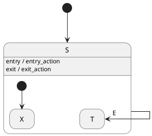
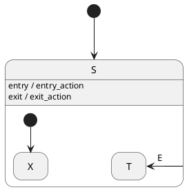
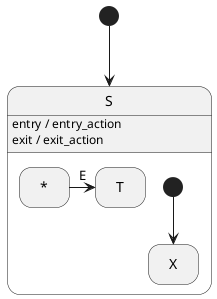
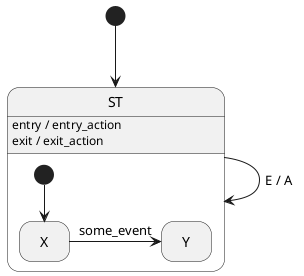
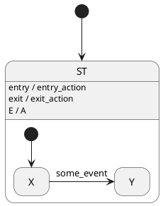

- Generated by
 1.13.2
1.13.2
|
Maki
|
A transition is said to be external when it exits its source state. Otherwise, the transition is said to be local.
Exiting a state causes:
Entering a state causes:
A transition to a sibling state or to the superstate is inevitably external, as the source state must be exited to allow the target state to be entered. However, in the case of a transition to a substate, or a self-transition, things can be different.
An external transition from S to its substate T looks like this:

In this example, whenever S is active and the event E occurs, the state machine:
S, whatever it is;exit_action;entry_action;T.Now, let's change this example a bit by making the transition from S to T local:

In this new example, whenever S is active and the event E occurs, the state machine:
S, whatever it is;T;that is, the same steps as with an external transition, except the 2nd and 3rd ones, because S is neither exited nor reentered.
A local transition to a substate can be seen as an external transition from any state of the region to a target state of the same region. As it happens, the notation below is also valid:

Other regions, if any, are not affected.
An external transition from ST to itself looks like this:

In this example, whenever ST is active and the event E occurs, the state machine:
ST, whatever it is;exit_action;A;entry_action;X.Now, let's change this example a bit by making the transition from ST to itself local:

In this new example, whenever ST is active and the event E occurs, the state machine:
A;that is, only the 3rd step of the equivalent external transition, because ST is neither exited nor reentered.
The special case of a local self-transition is called an internal transition. The action associated to an internal transition is called an internal action.
Within Maki, all transitions are external by default. You can express local transitions for the two cases we've seen.
State sets extend the concept of local transitions to substates; a transition whose source state is maki::all_states is the equivalent of such a transition:
In the transition table, you can pass maki::null in lieu of a target state to define an internal transition:
You can also implicitly create a guardless internal transition (which would be prepended to the transition table of the parent region) by adding an internal action to the builder of the state: